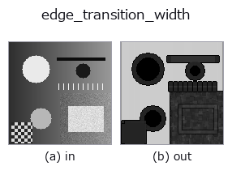

edges op• Data kinds: image → image
• Call: fullseye.apply(img, "edge_transition_width", a=0.5, b=0.5) (the 2-D model is one image plus two scalar knobs a,b∈[0,1])

*The figure is the actual output on a synthetic 128×128 input. Left: input, right: output. Point clouds are drawn as a top-down scatter (brightness = z), 1-D series as a line plot, volumes as the maximum-intensity projection along z, videos as the middle frame, complex images as magnitude; return values that are not pictures are shown as the values themselves.*
Sweeping knob a (0.1 / 0.5 / 0.9, the other knob at its default):
▸ edge_transition_width: knob a sweep (docs site)
Sweeping knob b (0.1 / 0.5 / 0.9, the other knob at its default):
▸ edge_transition_width: knob b sweep (docs site)
On other images (synthetic scene / photo / coins. Top row: inputs, bottom row: their outputs. Knobs at default):
▸ edge_transition_width: other inputs (docs site)
*The 4th column is a colour (H,W,3) input. This op handles colour without crossing channels (it does not convolve the colour channel as a third spatial axis).*
> This operator's description has not been translated yet. The original text follows as it is.
エッジの遷移幅(= その場の実効 PSF の広がり)を画素単位で測る。
`a が測定窓の一辺を 3,5,7,9(_k(a))に振る。b` が振幅と勾配の推定量を
選ぶ: `b <= 0.5` は窓内の最大 − 最小(素直・鋭いが外れ値に弱い)、
`b > 0.5 は**分位点**で、b` を上げるほど分位が 90/10 から 60/40 へ寄って
雑音に鈍くなる(そのぶん段差も丸まる = 取引になっている)。
幅 ≒ 局所の振幅 ÷ 局所の最大勾配。段差が 1 画素で立ち上がれば幅は 1 付近、
ぼけて 5 画素かけて立ち上がれば 5 付近になる。ぼけを作る `simulate_defocus`
の対で、こちらは測る側。合焦判定・モーションブラー量・解像限界・
文字が読める大きさかの判定に使える。
窓が遷移より狭いと過小評価になる(窓の中に振幅の全部が入らないため)。
出力が 0.7 を超えたら `a` を上げて測り直すのが実用則。
正規化は画像ごとではない(窓の一辺という定数で割るだけ)ので、**値は画像間で
比較できる。出力 1.0 は「遷移幅が窓と同じ = 窓より広いかもしれず測り切れていない**」
の意味で、`a` を上げて測り直す合図。平坦部やエッジの無い場所は 0。
★空フレームでは全 0 を返す(「端が無い」)。床を画像自身の振幅に対する相対量
だけで置くと、一様な画像では基準まで丸め屑になり、屑どうしの比が構造に化ける ——
実測で 0.5 一色に 1e-12 の雑音を乗せただけの画像が幅 3.49(= 窓の半分)を返した。
振幅そのものが絶対床 1e-6 に届かない画像には端が無いと言い切る。
端の扱いは `scipy.ndimage の既定 reflect`。内部で 8 bit に落とす処理は無い。
• gallery2d_edges family guide
• Sample-data catalog (download URLs / licences) — 2-D uses skimage.data (BSD/public domain) plus synthetic images; 3-D lists download URLs for real data sources (Stanford, PDS, …).
• Operator provenance and references — the sources of the research/methods this op family came from.
• The canonical algorithm (author, year) and its uses are named in the family usage guide above.
The program below has been verified to run (same input as the figure). In Studio's help this block becomes buttons that load and run it on the spot.
edge_transition_width 0.40 0.50
▸ Load this pipeline · Load & run
• gallery2d_edges — py -3.11 examples/gallery2d_edges.py
image as input)identity · gaussian · mean_box · bilateral · unsharp · median · min_filter · max_filter
edges)sobel_mag · prewitt_mag · roberts_mag · dog · grad_dir · log · corner_response · sk_scharr
*Provenance: ops.py — 2D operator registry. This per-op note is generated by tools/opdocs.py md (do not hand-edit).*
© 2026 Kazufumi Furuse — Fullseye operator documentation. Licensed under Apache-2.0.
{kind=link}
{kind=link}
{kind=link}